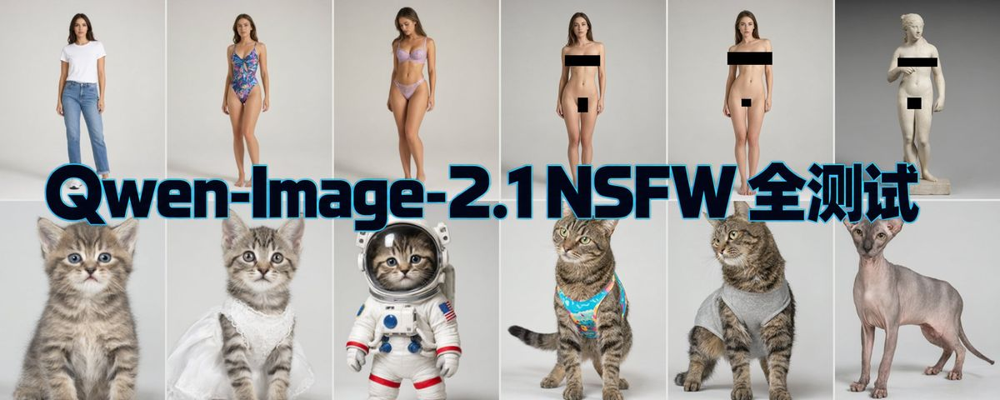
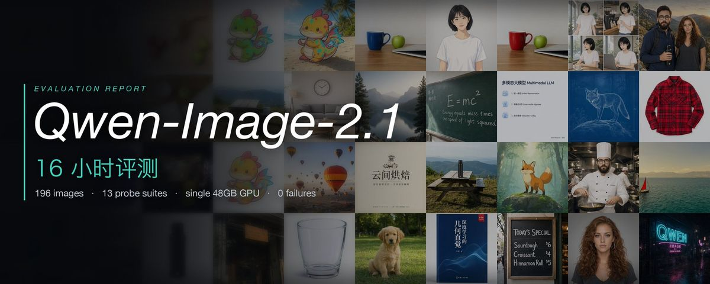
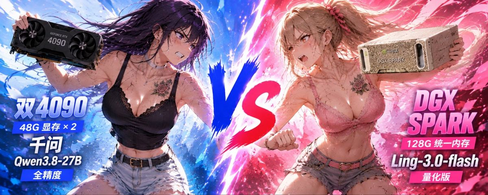
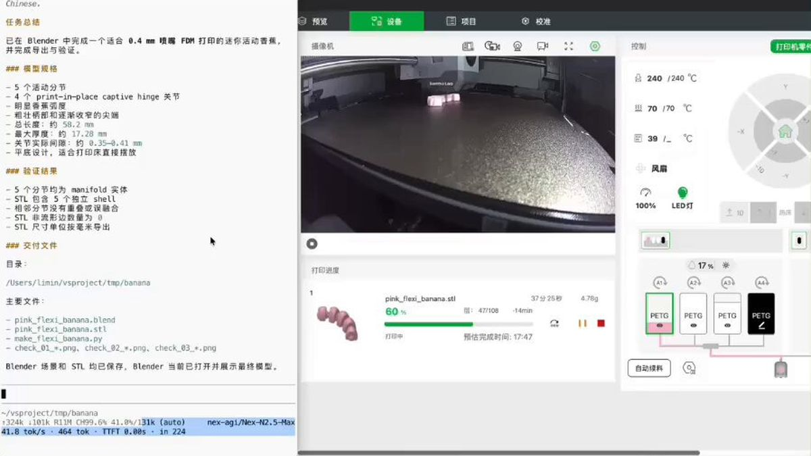
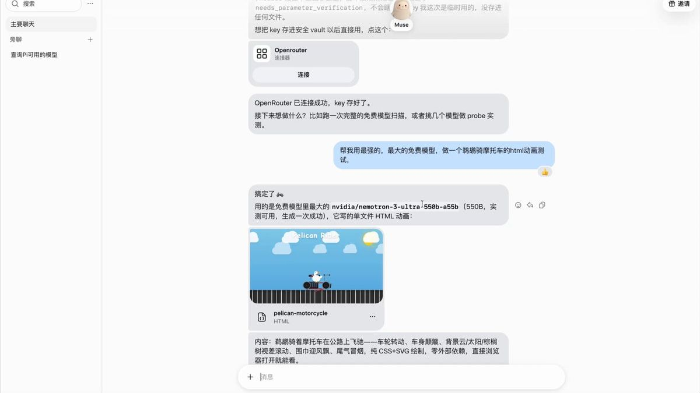
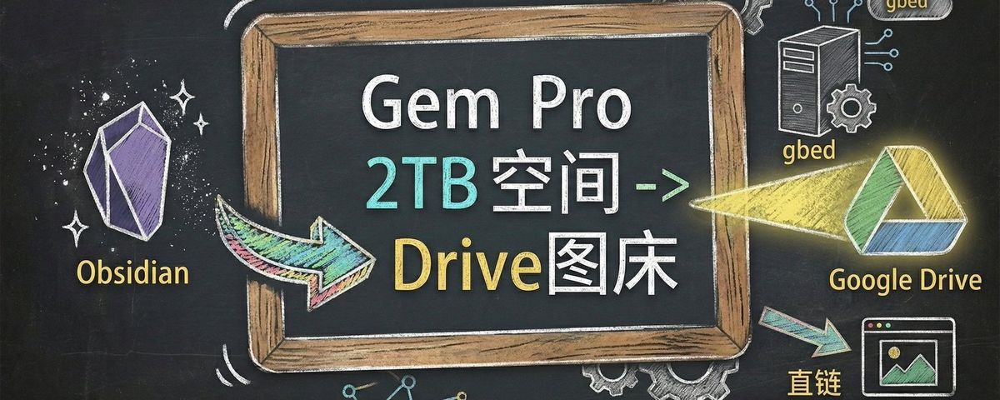
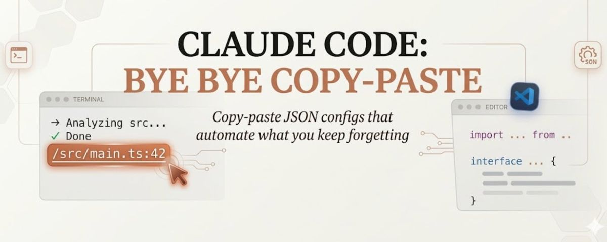
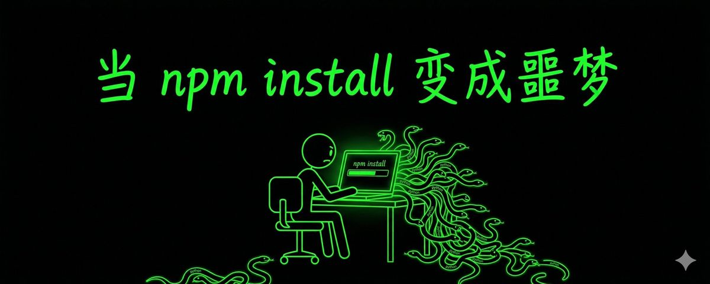
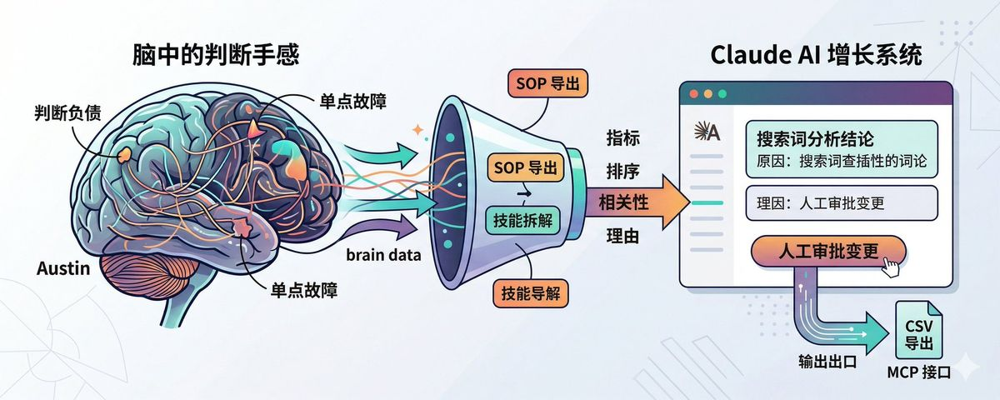
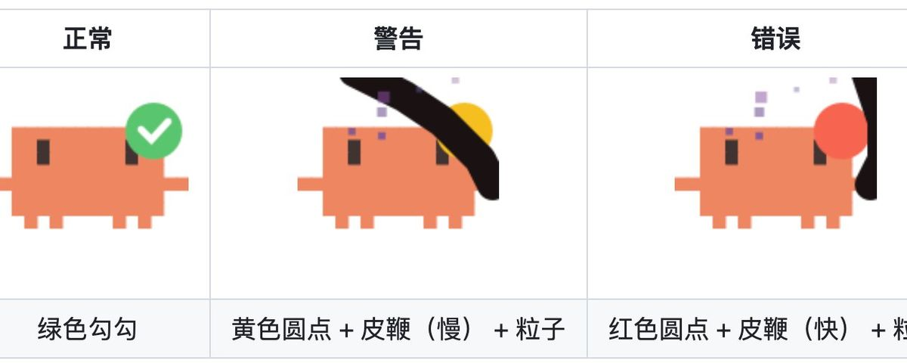

内容立场
不做 PPT 式展望。只分享自己踩过坑、验证过的一手路径。
把 Claude、Codex、Grok、Gemini 和开源模型从演示变成每天能用的工作流。 一手折腾、能复现、能跑在自己的卡上、能出结果。 面向品牌方：让你的产品被中文 AI Builder 圈层真正用起来，而不是刷一眼就划走。
已合作 飞书 · 豆包 · Bitget · ZenMux · 蚂蚁百灵 … 全部品牌 →AI Builder，超级个体。在信息噪音里只做一件事：把 Claude、Codex、Grok、Gemini 和开源模型压成可复制的日常操作。 从缓存和额度，到本地部署、生图模型实测、Agent 工作流—— 能跑通、能复现、能马上用，才值得发出来。数字都来自自己的卡。
不做 PPT 式展望。只分享自己踩过坑、验证过的一手路径。
重度 AI 使用者、独立开发者、想把开源模型跑在自己机器上的人，以及要把模型塞进真实工作流的团队。
模型一出来就上手测。高密度短帖 + 可收藏长文，热点快评和硬核实测都有。
2026 年 2 月到 10 月的 X 长文按真实阅读排序。已经有站内全文的不重复挂。点赞、转发、书签取自原帖。
Qwen-Image-2.1 出来以后，大家最好奇的还有一个问题：上线之前，安全边界到底在哪。我替大家跑了一遍。

Qwen-Image-2.1 刚发布，我在一张 48GB 的 4090 上跑了 13 组实验、196 张图、零失败。中文排版、原生透明、多图身份保持，弱在「替换」。

部署本地模型，是选 NVIDIA DGX Spark，还是两张魔改 48G 的 RTX 4090？两台偏科的机器，两个偏科的模型，四个组合我全测了一遍。

开源模型有手机端了。家里跑着的 Qwen，出门用手机点进终端，会话就在那里。没写一行代码。
一句 Prompt：做一根 6cm 的粉色活动香蕉，省点料。Nex-AGI 自己用 Blender 建模、看结果、修，吐出 STL。我扔进拓竹，视频里正在一层一层长出来。

数字人营销视频有五个位置：形象、声音、口型、内容、环境。本地用手机素材加 VoiceBox / Qwen TTS，MuseTalk 对口型。营销链路换成飞书里的豆包：选题和主播库进多维表格，Seedance 音画同出。
账号用了一年两个月，没被封过。规则只有一条：订阅国家、网络、账单地址、卡，必须是同一个国家。这篇把防封做法、一张国内护照能办的新加坡卡，和订阅顺序写完了。
口播系列第一篇，先不做数字人。五个角色：HTML 画面、本地 VoiceBox 复刻声音、Whisper 从成片倒推字幕、Playwright 录屏、ffmpeg 合成。跑通以后收成一个 skill。
让 Muse 强大十倍：白嫖 OpenRouter 上的旗舰免费模型，每天自动更新。一条安装命令，一分钟接上。

Qwen3.8-Flash-Next，125B 参数，每个 token 只激活约 6B。用 Strata 把 GPU、CPU、RAM 和 SSD 一起用上，12GB 显卡接近 100 tok/s。这次让 Ling-3.1-flash 从零部署。
Qwen3.5-0.8B 视觉模型，两个命令在 Mac 上跑起来，再拿去对 Claude Haiku。识字还行，写代码和当 Agent 总指挥不行。适合嵌进链路里看屏幕，不适合扛长任务。
Gemini 订阅送的 2TB Drive 闲着。gbed 在本地接住 Obsidian 的粘贴，用 Google Workspace CLI 上传，返回能直接插进 Markdown 的直链。

发小做跨境电商，数据不能上云。我没先搞懂他的生意，把表格和录音交给 AI 对齐需求，交付成几个跑在本地小模型上的 skill。记忆放在 EverOS 里。
Claude Code 打出来的文件路径不能点。iTerm2 开 Shell Integration 和 Semantic History，Cmd+Click 就能打开。要覆盖更多路径格式，用 osc8wrap。

月底整理发票，以前要自己开 IMAP、写两个 Skill。网易邮箱大师把 Mail Agent 装进邮箱里，说清月份和字段，它整理成表。特殊流程还是自己做 Skill。
垫图总是跑偏，是因为没把构图、透视和光拆出来。先让一个 GEM 把参考图的视觉骨架翻成英文提示词，再交给出图模型渲染。
LiteLLM 被植入木马，Axios 维护者账号被劫持。AI 会幻觉出不存在的包名，攻击者先去抢注。装之前先确认这个包真的存在、是谁在维护。

判断标准只装在脑子里，人一走就蒸发。Austin 把搜词时先看什么、留什么、杀什么写成 Claude 能跑的步骤。模型说该否定的词，他有时不批，因为那是战略词。

盯着 Claude 终端发呆，分不清它在想还是断了。claude-bubble 只读本地日志的时间戳：绿是在干活，黄是在重试，红是网络挂了。

看 Karpathy 那期访谈停了好几次。答案变得太便宜，学习里那种必要的困难会被跳过。他的办法是隔一段时间进实验室更新认知，再退出来自己做。
已完成商单累计曝光超 200 万。飞书和豆包是同一单：造浪者计划，数字人营销视频。本地 MuseTalk 对口型，豆包办公任务把选题写进飞书多维表格，再用 Seedance 音画同出。另外还有网易 UU 远程终端，以及蚂蚁百灵 Ling 系列实测。
面向 AI 工具、开发者产品、效率软件与内容平台。要真实体验，不要念稿。
深度上手 + 优缺点直说。适合 Claude / Codex 生态、Agent 平台、远程开发与算力工具。
可收藏的操作贴：步骤清晰、可复现。适合需要「教用户怎么用」的增长场景。
月度内容包、系列实测、社群联动。适合要持续出现在中文 AI Builder 圈层的品牌。
工具选型、工作流答疑、闭门分享。要整套落地？看 Agent 搭建 & 培训 →
产品链接 + 形式 + 预算区间，工作日 24–48h 内回复。
确认角度、交付物与排期。不合适会直说，不浪费彼此时间。
深度体验后产出内容，关键信息发布前与你确认。
按排期发布，同步阅读 / 互动 / 书签等真实数据。
发帖之外的另一条线：帮企业把 Agent 从想法搭到上线，再把团队教会。要能进业务的交付，不要 Demo 演示。
客服、获客、内容、数据分析 Agent 都搭过；天天泡在 Claude / Codex / Grok / Gemini 和开源模型一线， 更懂 AI 落地的真实痛点——您提需求，方案我来。
接上业务知识库：自动应答、工单分流、复杂问题转人工。
线索收集、筛选、触达与跟进自动化，销售只接热线索。
从选题、成稿到多平台分发，一条流水线批量出内容。
自然语言查数、自动出报表，业务同学不再排队等取数。
一家跨境电商团队，选品和报表两条流程全靠人工。拆完需求后交付了两套可独立运行的本地工具： 一套自动跑选品筛选，一套把杂乱的平台报表转成能直接用的表。 使用的是完全不写代码的运营同事——双击图标就能跑， 数据全程留在本机，不上传、不出内网。
交付前开了三个 Agent 并行交叉评审代码（工程 / 测试 / 体验三个视角）， 互不通气却独立指向同一批隐患，修完才上线。这也是我做交付的默认流程。
品牌方 / 产品方 / 企业团队 / 代理：发一封简短说明即可。 建议包含产品链接、合作形式、预算区间、期望时间，我会尽快回复。